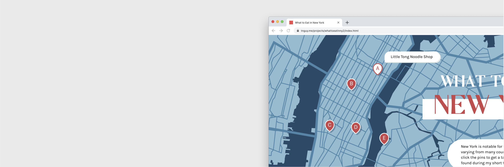
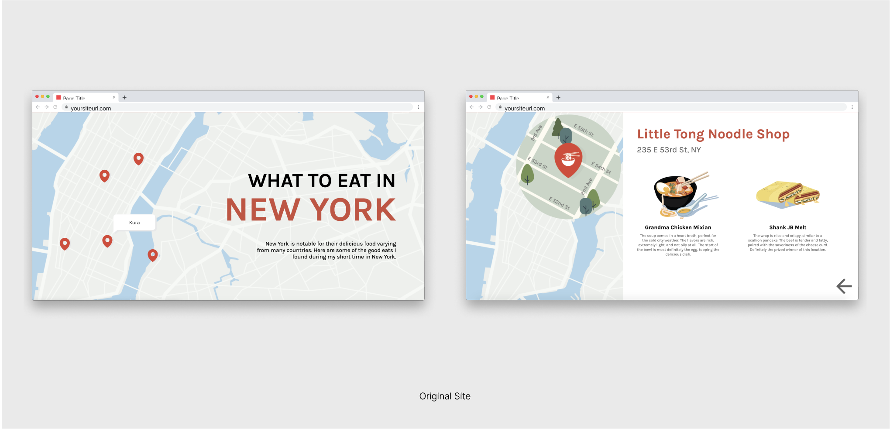
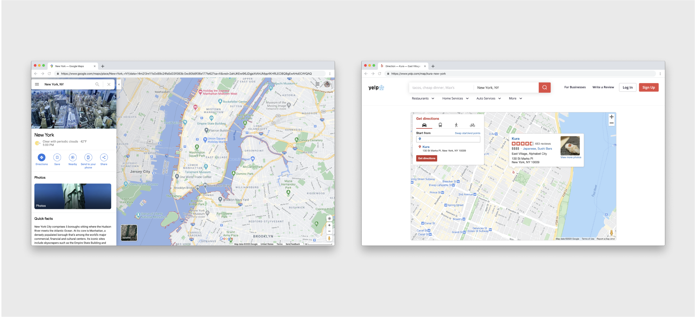
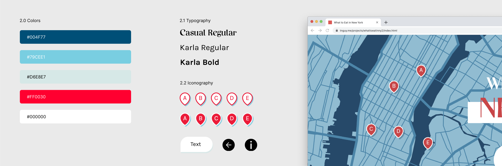

What to Eat in NY
An interactive site that gives a taste of some of my favorite and good eats in New York. In addition, a quick redesign sprint of my original site.Role
Graphic DesignerWeb Designer
Tools
Adobe IllustratorHTML, CSS, JS
Timeline
3 days, Jan 2020

Project Overview
The Problem
How might we make the site more interactive and playful for the user, furthering enhancing the user experience?
The Solution
Make the site more interactive and lively for the user by implementing more actionable features and new branding.
01 What can be improved?
Looking at my original site, although intuitive, there could be improvements that would further enhance the user experience.
Including direct links to social media pages or Yelp.
Adding an icon hyperlinking to social media pages or Yelp reviews would very much help other users to be more inclined to eat at a certain restaurant based on a whole data of reviews.
More animated features.
Adding more animation to my site would improve the interactive space that my website offered, rather than have items fixed to the page itself.
Add more contrasted and bright colors.
The current site looked too muted and it was difficult to identify certain features of the site, especially the background. Updating the colors to be vibrant and contrasted with one another would enhance the overall visual experience.
Adding an icon hyperlinking to social media pages or Yelp reviews would very much help other users to be more inclined to eat at a certain restaurant based on a whole data of reviews.
More animated features.
Adding more animation to my site would improve the interactive space that my website offered, rather than have items fixed to the page itself.
Add more contrasted and bright colors.
The current site looked too muted and it was difficult to identify certain features of the site, especially the background. Updating the colors to be vibrant and contrasted with one another would enhance the overall visual experience.

02 Research
01 Google Maps
I looked at Google Maps to gain inspiration on map structure and layout. To get provide accuracy on location, I traced a screenshot of New York, and included pins and hover text.
02 Yelp
I looked at Yelp as inspiration to differentiate pins from one another. Inverting the pin color once the pin was hovered further visually differentiated the locations from one another.
I looked at Google Maps to gain inspiration on map structure and layout. To get provide accuracy on location, I traced a screenshot of New York, and included pins and hover text.
02 Yelp
I looked at Yelp as inspiration to differentiate pins from one another. Inverting the pin color once the pin was hovered further visually differentiated the locations from one another.

03 Branding

Learnings and Takeaways
Taking upon the task to reiterate my initial designs, I saw the gradual learning aspect of design. I still consider myself a novice in web design, especially with JavaScript. However, challenging myself and completing this project demonstrated that design is a practice and the best thing that I can do is just start and keep learning.
Next Steps
Responsive for all desktops.
To keep my site inclusive to all users - those using different devices (phone, laptop, iPad, etc.), I think another improvement would be to keep my site responsive and compatible with different users.
Include icons to insinuate the type of ethnic cuisine.
To give further context on the specific location, including icons would help insinuate the type of ethnic cuisine one is feeling hungry for at the moment.
To keep my site inclusive to all users - those using different devices (phone, laptop, iPad, etc.), I think another improvement would be to keep my site responsive and compatible with different users.
Include icons to insinuate the type of ethnic cuisine.
To give further context on the specific location, including icons would help insinuate the type of ethnic cuisine one is feeling hungry for at the moment.